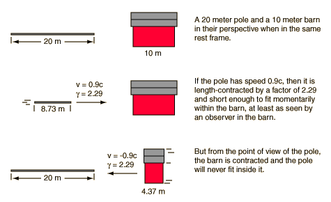

The Pole-Barn Paradox
The pole-barn paradox is a famous variation on the twin paradox which must be addressed with the ideas of simultaneity in relativity. The fact that two events are simultaneous in one frame of reference does not imply that they are simultaneous as seen by an observer moving at a relativistic speed with respect to that frame.

To calculate the times for the two frames of reference, consider the pole entering the barn and set t=t'=0 at that instant and x=x'=0 to establish the coordinate system. In the events described below, x' and t' refer to the pole frame while x and t refer to the barn frame. The relativity factor γ = 2.29 and the Lorentz transformation is used to transform quantities from one frame to the other.
Barn frame of reference
The barn is considered to the be the reference frame, and x and t are used for positions and times.
- Front of pole enters: t = 0
- Back of pole enters: t = 8.73m/0.9c = 32.29 ns
- Front of pole leaves: t = 10m/0.9c = 37.04 ns
- Back of pole leaves: t = 32.35ns + 37.04 ns = 69.38 ns
|
The back of the pole enters the barn before the front of the pole leaves, so a 1 ns gate could be closed on both ends, containing the entire pole.
|
Pole frame of reference
- Front of pole enters: t' = 0
- Front of pole leaves barn: t' = 4.37m/0.9c = 16.14 ns
- Back of pole enters: t = 20m/0.9c = 74.07 ns
- Back of pole leaves: t = 16.14 ns + 74.07 ns = 90.21 ns
- Front gate closes at t = 32.35 ns, but t'= γ(t-vx/c2) = 2.29(32.29 ns) = 74.07 ns
- Back gate closes at t=32.35 ns, but at x=10m. It is simultaneous in the barn frame, but not in the pole grame. The time for back gate closing in the pole frame is t'=γ(t-vx/c2) = 2.29(32.35 - (0.9c)(10 m)/c2) = 5.38 ns.
|
From the pole point of view, the front gate closes just as the back of the pole enters. The surprising result is that the back gate is seen to close earlier from the pole framework, before the front of the pole reaches it. The gate closings are not simultaneous, and they permit the pole to pass through without hitting either gate.
|
|
Index |